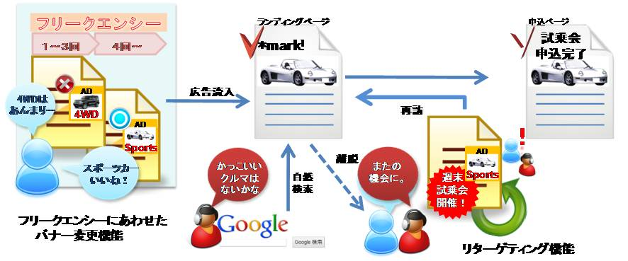

Fringe81、第三者配信エンジン「iogous*mark」を発表
～ユーザーの広告接触に合わせた適切な広告露出・レポートが可能に～
Fringe81株式会社（本社：東京都渋谷区、代表取締役社長：田中 弦、社名よみ仮名：フリンジ ハチイチ）は、バナーの最適化配信サービス「iogous(イオゴス)」(*1)の新ラインナップとして、第三者配信エンジン(*2)「iogous*mark」を、本年3月より提供開始することをお知らせいたします。
【開発の背景】
日本のインターネット広告は、ユーザーが広告を「クリックした後」の計測・改善が主流です。つまり、誰に、何を、何回見せたか、という「クリックする前」の計測は大抵行われてきませんでした。これまでは広告の直接コンバージョン効果によって広告効果を評価することが一般的であったため、ディスプレイ広告の間接効果（ポストインプレッション効果）(*3)を正しく評価することができませんでした。ここに大いなる市場拡大のためのチャンスが存在します。
【開発の狙い】
Fringe81が本サービスを開発した理由は、日本の広告市場の商習慣にあわせた第三者配信エンジンを誰もが利用できる価格帯で提供し、幅広いビジネスパートナーと連携することで、日本のインターネット広告の「１インプレッションあたりの価値」をより高めていき、市場を拡大させるためです。
サーバー構成や回線などのインフラ設計、配信エンジン、レポートシステム、最適化アルゴリズムなど広告配信に必要なシステムを、オープンソースを活用しながら全て一括で自社開発することで、通常の配信エンジンの数分の１のコストでの広告配信が可能となりました。
広告主は、「iogous*mark」経由でディスプレイ広告の配信を行うことにより、誰に、何を、何回見せたか、という「クリックする前」の計測を正しく、かつ統合して行うことができます。これにより、広告１インプレッションあたりの価値をより高めていくことが可能となります。間接効果（ポストインプレッション効果）を計測することで、当該広告を閲覧したユーザーが後ほど検索エンジン等の別導線でコンバージョンするなどの「真の広告価値」が判明します。また、広告閲覧回数にあわせたクリエイティブの変更などを柔軟に行うことも可能となります。媒体社は、本サービスを利用する事で、本来持っているディスプレイ広告のインプレッションの価値をより高める広告配信や、新規商品の開発を行うことが可能となります。
本サービスは広告主のみならず、媒体社への技術提供や共同新商品の開発もあわせて行います。
今後、米国で一般的な第三者配信エンジンが持つ機能は全て搭載予定です。また、独自の最適化技術も開発してまいります。「iogous*mark」の導入により、アドエクスチェンジやDSPなど、１インプレッションの価値を高めるソリューションへの対応もよりスムーズになります。
【「iogous*mark」の主な機能】
1.ポストインプレッション計測やフリークエンシー（広告表示回数）レポートが取得可能
2.１ユーザーあたりの広告のフリークエンシー数に応じて、それぞれ配信するバナーを変更可能
3.既に広告主サイトに訪問した事があるユーザーには別のバナーを「振り分け配信」（リターゲティング）可能
4.その他各種レポート／最適化機能
これらの機能により、近年話題となっている広告の「アトリビューション・マネジメント」(*4)も可能となります。

【今後の展開】
本年１月より実験導入やビジネスパートナーの募集を開始し、３月より本格提供を開始いたします。第一号案件として1月17日より、株式会社クライテリア・コミュニケーションズ(本社：東京都港区、代表取締役CEO：広屋 修一)の運営するアドネットワーク「ADJUST」において明治乳業株式会社様が配信を開始いたします。Fringe81は、本サービスのレポーティング機能や最適化配信機能の充実、他社サービスとのシステム連携など、さらなるサービス拡張を行ってまいります。
Fringe81では引き続き、世界で最も洗練された日本のインターネット広告・インターネットサービスを世界に向けて発信してまいります。
(*1)「iogous（イオゴス）」とは http://www.fringe81.com/service/iogous.html
Fringe81株式会社が独自開発した「クリエイティブ・オプティマイゼーション（統計解析を用いたデザイン要素や文言の自動最適化）」技術を利用したプラットフォームです。キャッチコピー、メインビジュアル、ロゴなど、膨大なデータの蓄積・学習により、広告効果を向上させるバナー広告を自動生成・配信します。
(*2)「第三者配信エンジン」とは
媒体社の持つ広告配信エンジンではなく、第三者（この場合はFringe81）の広告配信エンジン経由で一括して広告を配信するシステムです。
(*3)「ポストインプレッション効果」とは
当該広告を閲覧したユーザーが、当該広告をクリックせずに後ほど検索エンジン等の別導線から訪問し、購入へつながる間接効果を指す。（ビュースルーコンバージョンともいう）
(*4)「アトリビューション・マネジメント」とは
広告を閲覧したユーザーの流入経路を一括で把握し、正しく広告効果測定をしていく手法です。
Fringe81株式会社 広報チーム 広報人事担当：櫻井
Tel: 03-6869-8100 Email: info@fringe81.com